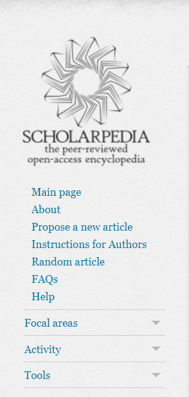
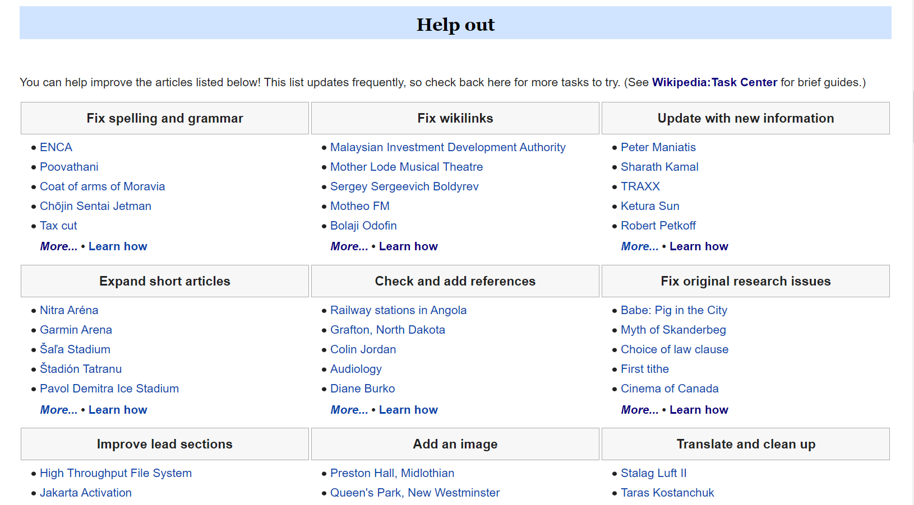
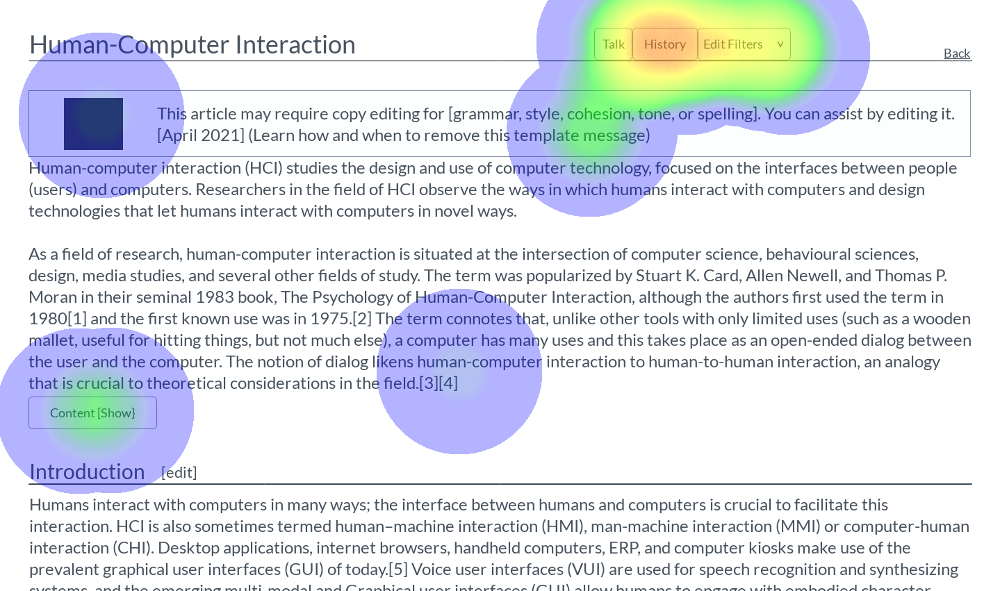
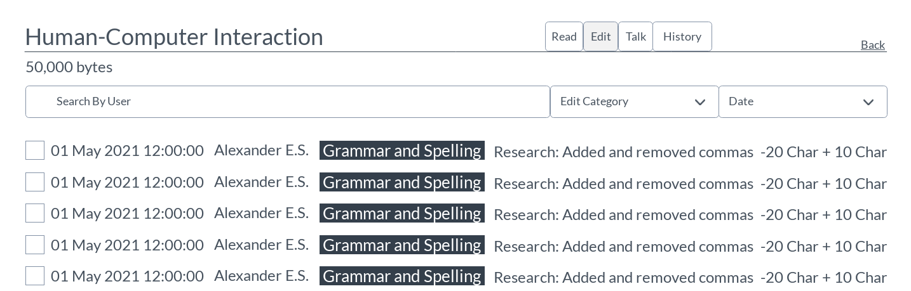

Wikipedia Collaboration and Editing Design
Making editing on Wikipedia more collaborative
Wikipedia's design has not changed in the past 10 years. New features like Google Translate have been added over time to help editors contribute to articles, but the biggest feature of the encyclopedia remains to allow editors to collaborate. What changes can be made to improve the way editors collaborate to complete articles, discuss, and resolve issues?
Despite not having many changes over the years, Wikipedia is still very usable by editors and readers.
This project was an extension of a research project I worked on investigating how users of the Spanish Wikipedia collaborate.
User Research
During the previous research project I worked on, we wanted to see how users from different language editions of Wikipedia
collaborate compared to each other. I was working with the team researching users from the Spanish edition. This involved us
first having to translate documents like recruitment emails and consent forms for interviews. We then recruited based on the
ranking of edits, so we would make sure to interview very experienced users.

Ranking of edits for Spanish Wikipedia
The more important method for recruiting though was reading through user conversations to see if they have had any situations where they needed to come to a consensus with another user or they had to demonstrate some form of power play, like convincing another user their thoughts or edits are correct.
Article talk page translated with Google Translate. An admin tries to get editors to write about what the person did to earn an award, not just winning the award itself. Names blocked for privacy.
Interviews
Our goal for the number of participants was 12. We were able to recruit 13 Wikipedia users for the interviews. I Conducted 4 interviews and observed 2. Interviews were about an hour long and consisted of three phases.
The first phase had to do with the participant's background, things like how did they start editing, what kind of topics they like to edit, what their work on the site consists of today, and how familiar they are with the editing policies of the website.
The second phase was where we showed them examples of the conversations they had where they had to reach a consensus with another editor, or editors, and other similar situations. After they had some time to review the exchange, they would also describe what they were trying to accomplish, what they did to try to help their case, and finally, what the outcome of the interaction. We did this with 2-3 conversations, depending on how much time we had.
During the third and last phase, we asked how they felt about authority on Wikipedia. Based on their previous interactions with other users, we also asked what kinds of things can help editors reach a consensus. When asking if they would like to add anything else, some participants gave suggestions for new editors.
Results
All of our participants were very experienced, each one having at least 10 years of experience. Though we did not ask specifically for ages, some still mentioned theirs. Participants were from around ages 28 to 80. Despite the age differences, all participants chose to edit articles that had to do with topics they enjoyed. Another common method for finding articles to edit was choosing articles with issues they specialized in. This goes back to the previous point, where a professor of history may correct mistakes on an article related to their field
As some users gained more experience, they also moved on to more specialized tasks. They have become more involved with Wikimedia, and have even created bots or focused more on formatting data. With the amount of experience the users had, they were all familiar with the policies.
When going over the conversations they had on talk pages, participants would present past examples and policies to help them convince another editor. They would also make sure to act in good faith, but would also match the attitude of the other editor if they were being more aggressive. Talk pages for articles related to things like politics and history can get heated though. Conversations for those topics are usually unavoidable but users try to see both points of view
Participants believe the authority on Wikipedia is like controlled anarchy. There are not enough admins to control everything, but there are a few along with the Café, a community portal where users can address and vote on issues pertaining to a certain article or Spanish Wikipedia as a whole. In a way though, consensus is still involved since users can't vandalize whatever they want, and discussions are generally quick to solve an issue.
User Personas
From the results of the user research, I created 3 user personas.
The first persona is the hobbyist. The hobbyist contributes to articles for topics related to their interests. They usually edit in their free time to add their own knowledge or correct mistakes.
Wants: Find and edit many articles based on topics related to their interests
The second persona is the admin. Administrators who focus on resolving issues with users, removing or protecting articles, and marking issues on articles.
Wants: Keep articles marked with up to date templates, or tags. Resolving issues easily between users

The third persona is the specialist. The specialist occasionally makes text edits to articles but now focuses more on Wikipedia related organizations or making charts and bots.
Wants: Edit articles with issues related to their area of expertise, no matter the topic
Secondary Research
Since I had already completed my user research before starting the project, I then went onto the secondary research. I had never edited an article, though I did learn a few skills like editing a user talk page. I had a lot of trouble finding a particular area to design for, so I looked at many features of Wikipedia, but ultimately I focused on finding an article to edit, and then editing it. Some of these features included Creating New Articles, Templates, WikiProjects, Task Center/Maintenance, and the navigation from the task center to an article. I also focused more on these topics from a new user perspective because I would have trouble recruiting the same participants from the initial user research, and time zones make it difficult to schedule an interview. Since there were not a lot of interactions between new users. I looked at resources on Wikipedia teaching users how to edit, and where to find articles to edit. I felt like no matter the help page I went to though, there were always more links and help pages I needed to go to. I felt more confused and overwhelmed at times because of this. I wanted to think of a way to centralize the different features I came across, like Wikiprojects, Editing by issue, Finding good examples of how to edit.
Competitor Analysis
When thinking about how to help users collaborate, I was reminded of Google Doc's comment feature as well as Atlas.ti. Both allow users to highlight text and leave comments, and in Atlas.ti's case, leave tags to give a qualitative code to a sentence in a paper or transcript. This made me think about having users be able to tag sections or sentences for different issues. This could also make edits more clear, by giving new users examples of specific types of edits they should follow. On Wikipedia's Collaborating page, they described the process for how an editor should work with others, but they also mention that it is not a discussion board and that editors should put their time more towards editing than discussing.

Example of comments in Google Docs

Example of coded sentences in Atlas
Example of adding a code to a sentence in Atlas
I also looked at other online encyclopedias like Scholarpedia and Encyclopedia Britannica, though these were more to see different layouts since neither of the two allow anybody to edit the articles. They serve different purposes. I did like how the side bar felt less cluttered for both of them though.
Scholar Side bar
Initial Ideas
Two ideas were most prominent to me. Having a centralized portal for editing, similar to the community portal. The community portal requires a lot of scrolling though so I wanted to follow the structure of the editing tutorial dashboards instead.
The second idea I had was using a tagging system for different types of edits, either on the users' talk pages or on article edits. The current tagging system for edits is not very helpful since they are mostly technology related, like what kind of editor or device they used.
I was more inclined to go with the first idea with the editing portal because of the quote about Wikipedia not being a discussion board. So I focused on the first idea for the next stage
User Testing: Current Selection and Editing Process
While looking through the different features of Wikipedia, I found the community portal.
From here, you could select what type of issues you wanted to work on, such as Grammar and Spelling or Translation issues.

After selecting an issue, you could then look at list of articles to edit with that issue, or you could learn more about the issue itself.

Once you selected an article to edit, you can see a template, or tag, at the top of the article that shows what is wrong with it. It may take a while to fix though
I tested this process with 5 new Wikipedia users. I thought they would be able to give more thoughts on what could be unclear in the navigation.
Some common pain points were that there were too many links in general, combined with a lot of scrolling. This made it difficult to find where to go next, such as selecting a specific article when asked to. Not just on the article, but on other pages there were big banners/templates at the top of almost every page, some that seemed to have an unclear purpose. These distracted the users from the content they were trying to read. Since a copyediting template, which falls under grammar and spelling issues, may be applied to the whole article. It can discourage users since they felt unsure about how much work they would need to do on the article. Some articles have templates/tags from three years ago, showing that templates may not be the most effective for raising editing issues. With this last piece of feedback, I also began to think of a tagging/template system for editing on articles rather than user talk pages.

My next step was to create some designs.
Initial sketches

For the main dashboard of the editing portal, I first wanted to keep the scrolling layout. The screen on the left represents the top part of the page. I changed the nine issues to cards instead of the nine headers like before. I also added a section for Wikiprojects to help users find articles related to topics they might like, and possibly joining other editors in a Wikiproject.
The second sketch shows an article on the left. There are still important banners at the top, but section headers now have issues, like grammar, marked next to the edit button. This is supposed to take up less space and not be as distracting. The other change is to the edit summary, which is mostly the same as the original. Here, users can now add tags that apply to the edit they made, such as adding citations.
These were the main sketches for the idea I wanted to go with. I focused on similar screens as the ones I had users observe in the usability tests. I created a low-fidelity prototype next.
Low-Fidelity Prototype and User Tests
I created a low-fidelity prototype on Marvel following a similar user journey to the original usability test. I ended up having elements of the editing portal and tagging system, though I think too much about the tagging system yet. I conducted 5 usability tests with the prototype. Since I did pay for the service though, I was only able to download copies of my heatmaps.
The first screen is the dashboard of the editing portal. There are tabs on the side, so users don't have to scroll as much, and the nine cards, one for each editing issue. This time, the cards don't have articles listed on them. Users were able to find the Grammar and Spelling issues quickly.

The second screen is the list of articles with grammar issues. I removed the banners previously there and made it so they can filter by date and topic with drop down menus, as opposed to having different pages for different month-year pairs. When I told users to find the Human-computer interaction article, most of them wanted to use the search bar to find it. Every user was able to find it in the end though.
The third screen is the main article page. Here users first needed to filter by an edit filter, representing new tags for issues, like a grammar tag. Some users didn't notice it though, instead trying to just find the section with the tag manually.
The fourth screen shows a filter selected. It will only show sections of the article containing the filter. Here, users were asked to "make an edit" by clicking on the text in the section shown.
This screen shows the edit summary, editors can select what tags they used in their edit now. Most users wanted to preview changes first but this screen was clear to the users after reading the options.
This pop up shows when a user adds the same tag to their summary as the one the section was marked with. It asks the user if they want to remove the tag if the issue is cleared now that they made an edit.
The last screen is the article history page. Here the user can see when all the edits were made as well as what type they were and who made them. Users can now filter based on date or editing category/tag.
Feedback
Since I had previously tested the similar task on Wikipedia itself, I compared what the users told me about both.
Pros: Not as cluttered or text-heavy, so the navigation from page to page is easier. Tags made it easier to find a section in need of editing. Tags for each edit on the history page made revisions clearer
Cons: Users liked being able to select letter at the list of pages for an issue. Edit filters was confusing since they were off to the side more and the name was also confusing. The design of the prototype was minimal, so it could use something to make it more interesting
Overall, the users like my solution but it could still have some more improvements. I was surprised that some users liked the letter sorting option on Wikipedia. Based on this feedback, I iterated on these designs and added an extra feature.
Iteration
The first change I made was adding a topic filter to the editing portal dashboard. This was so users could have an easier time finding articles for subjects they know about, based on my results from the initial user research. The filter choice would carry over to the other pages, like the issue pages or the list of Wikiprojects available.

The second revision I made was to the list of articles page. I added the letter selector back in. It also made more sense to have since users probably won't have a specific article they went to edit beforehand, they would probably be exploring first.

The next revisions I made were to the article page. I got rid of the edit buttons next to each subheading, like Introduction. Tags for editing are only shown when the edit tab is selected. I also changed the tabs at the top, getting rid of the edit filters and moving over the read tab.
The next revision was made for when the edit tab is selected. I added the option to switch between the visual editor and the markup editor. I also added a tags menu, where the user will be able to see tags used on the page and filter for certain ones.

With the new tags menu, users can see all the unique tags on the page, they can select one to only see sections with that tag. By default though, it shows all the sections that have an issue tagged, like for citations or grammar.

This new feature allows users to highlight a sentence and add a tag for an issue that applies to it, like for an admin who is marking articles.
The last revision was made to the history page. Summaries now show characters added and deleted. Bytes were deleted to clean up the summary and they because they did not seem necessary. The talk and contribution links for individual users were removed as well. THe user can click on a user's name and their talk page and contribution lists will be available at their profile page instead.
After making these revisions I started to prepare to create a high-fidelity prototype.
High-Fidelity Prototype
Mood board
To start my high-fidelity prototype, I looked for other ideas on things like dashboards, text editors, and encyclopedias. I created a mood board out of some of the ones I liked. All the designs on the mood board were found on Dribbble.
Design Language
Next, I looked for colors and design elements used on Wikipedia so I could recreate them for my prototype.
Final screens
Due to the height of some of the screens, the captions will go above the corresponding picture.
This is the main dashboard for the edit portal, there are the tabs on the left to find groups for interests. This page is mainly to find specific issues to fix.

This page is the list of articles for an issue. I got rid of the banners at the top. I thought it would be best if they only showed up for admins, at least the admin specific ones. Users can filter by month-year and topic, as well as sort alphabetically.

This is the main article page. Editing buttons are not shown on the read tab. This is meant to be more intentional for editors. It is also less distracting for readers. Only the most important Templates will be shown at the top now.

This is the editing view, specifically the visual editor. Their is a side bar on the right now, this time for editing for certain tags.

When one tag is clicked at the very top, it will only show sections that contain that tag.

Here the user is highlighting a line to add a tag. They can also highlight a heading to mark the section as having an issue.

A menu pops up for the user to add a tag to the highlighted line when they right-click.

As the user types, tags will pop up if they match the letters typed so far. The user can select the plus button to add it.

The user has selected a tag. They can also choose to add their name to the tag for others to see. This can help other users contact them if their are any questions or if their issue is resolved.

The user selects the radio button to add their name to the tag.

On the right at the same exact height, you can see the new citation tag added.

A user can hover or click on a tag on the side to highlight the sentences that were marked. There will be a very light highlight to all sentences marked with a tag, but clicking on the specific text or tag on the side will make it show up more clearly.

When the user right clicks a tag, a pop up will appear, asking if the user wants to delete the tag. It mentions to make sure the issue is actually cleared before removing the tag.

The user has just changed some text on the highlighted sentence.

Once the user makes an edit, the publish changes button at the top will change to blue.

When the user clicks publish changes, an edit summary will appear. If they made an edit to a section marked with a tag, it will autofill the tag field and it will ask if the user wants to remove the issue/tag after publishing their changes.

The user has written in the edit summary field and wants to remove the corresponding tag.

The user has completed the edit and the tag is now removed from the corresponding sentence.

This is what the edit summary will look like if a lot of edits are made or if the edits are made to an untagged section.


I have been working on an article History screen so I will try to add those screens in the future.
Reflection
Limitations
Before working on this prompt, I was working on another prompt that I was not as passionate about. With that prompt I got up to the point of making wireframes and user journeys. I didn't have as much time to work on this project, but I will still update the designs and pictures. I should have focused more on the individual feature instead of having it on a full-sized page, such as highlighting a line to add a tag. I was also thinking about using a new design language but decided it would be best to use the current one since I was not sure how to utilize so much space. I did try to clean up pages by getting rid of banners and some extra text though.
Learnings
This was my first time designing for desktop so I was not prepared for how much more time consuming it would be compared to a mobile device. It made me appreciate Wikipedia's current design more. Through this experience, I got a lot more experience using both Figma and Marvel. Recreating all the existing components especially helped. I would like to see how participants from the research project would feel about the designs. I tried to take their responses into account along with the newer users I tested the low-fidelity prototype with. This was a fun project overall and I'm glad I was able to use a previous research experience to and apply it to a design project!
- UX Research
- UX / UI Design